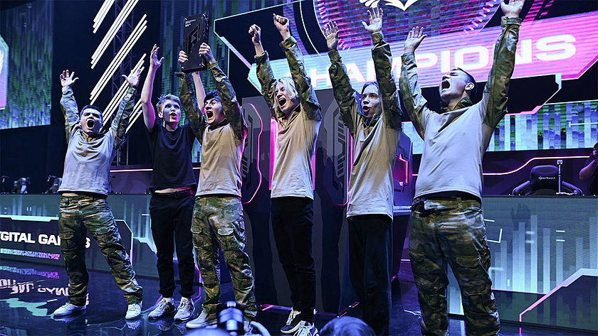

Что такое Игры Будущего?
Игры Будущего - международный мультиспортивный турнир в концепции фиджитал. Спортивное шоу нового формата, которое объединит соревнования в физическом и цифровом измерениях.
С 21 февраля по 3 марта 2024 года пройдут первые в истории Игры Будущего! Шоу нового формата войдет в историю спорта, а столица Татарстана станет местом притяжения молодежи со всего мира.
На Игры Будущего приглашаются профессиональные спортсмены и клубы со всей планеты. Турнир будет проходить в формате фиджитал, во время которого атлеты будут сражаться на пределе физических и цифровых возможностей.
Дмитрий Чернышенко: Игры Будущего — триумф инноваций в спорте
Турнир «Игры Будущего» станет началом новой эры в развитии спорта не только в России, но и в мире. Об этом на пленарной сессии «Спорт и туризм. Синергия развития», которая прошла во время выставки-форума «Россия» за месяц до старта Игр, заявил заместитель председателя правительства России Дмитрий Чернышенко.
Вице-премьер считает, Игры Будущего помогут в развитии туризма и международного сотрудничества, а Казань, где с 21 февраля по 3 марта этого года пройдет турнир, может смело претендовать на статус спортивной столицы России.
Победители киберспортивных игр в России будут поступать в вузы без экзаменов
1 ноября 2023 года «Единая Россия» внесла в Госдуму законопроект о праве победителей крупных международных соревнований на поступление в спортивные вузы без экзаменов. Инициативу поддержали Минобрнауки и Минспорта.
В список соревнований, которые дадут право на льготы, могут войти Спортивные игры государств – участников БРИКС, Игры дружбы и даже Игры будущего, посвященные киберспорту. Перечень будет устанавливать правительство. Игры БРИКС и Игры будущего пройдут в 2024 году в Казани, Игры дружбы – в Москве и Екатеринбурге. Ожидается, что нововведение вступит в силу в 2024 году. Перечень соревнований, победители которых смогут поступать в вузы без экзаменов, будет утверждать правительство.
«Синергия» запускает программу магистратуры по направлению «менеджмент в киберспорте и фиджитал спорте»
Университет «Синергия» и проект «Игры будущего» запускают совместную программу магистратуры по направлению «менеджмент в киберспорте и фиджитал спорте». Первый набор абитуриентов планируется на 2023/2024 учебный год. Получить магистерское образование смогут специалисты фиджитал центров, региональных отделений федерации фиджитал спорта, организаторы профильных спортивных событий и все, кто планирует связать свою профессию с цифровыми видами деятельности. Об этом университет сообщил 16 мая 2023 года. Подробнее здесь.